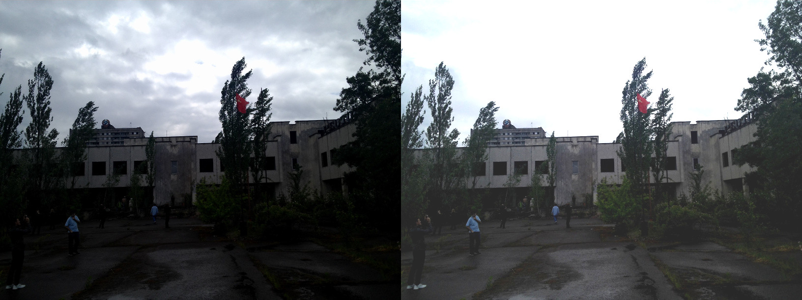

Goal
In this tutorial you will learn how to:
- Access pixel values
- Initialize a matrix with zeros
- Learn what cv::saturate_cast does and why it is useful
- Get some cool info about pixel transformations
- Improve the brightness of an image on a practical example
Theory
- Note
- The explanation below belongs to the book Computer Vision: Algorithms and Applications by Richard Szeliski
Image Processing
- A general image processing operator is a function that takes one or more input images and produces an output image.
- Image transforms can be seen as:
- Point operators (pixel transforms)
- Neighborhood (area-based) operators
Pixel Transforms
- In this kind of image processing transform, each output pixel's value depends on only the corresponding input pixel value (plus, potentially, some globally collected information or parameters).
- Examples of such operators include brightness and contrast adjustments as well as color correction and transformations.
Brightness and contrast adjustments
Two commonly used point processes are multiplication and addition with a constant:
\[g(x) = \alpha f(x) + \beta\]
- The parameters \(\alpha > 0\) and \(\beta\) are often called the gain and bias parameters; sometimes these parameters are said to control contrast and brightness respectively.
You can think of \(f(x)\) as the source image pixels and \(g(x)\) as the output image pixels. Then, more conveniently we can write the expression as:
\[g(i,j) = \alpha \cdot f(i,j) + \beta\]
where \(i\) and \(j\) indicates that the pixel is located in the i-th row and j-th column.
Code
- The following code performs the operation \(g(i,j) = \alpha \cdot f(i,j) + \beta\) :
#include <iostream>
int main( int argc, char** argv )
{
double alpha = 1.0;
int beta = 0;
String imageName(
"../data/lena.jpg");
if (argc > 1)
{
imageName = argv[1];
}
Mat new_image = Mat::zeros( image.
size(), image.
type() );
cout << " Basic Linear Transforms " << endl;
cout << "-------------------------" << endl;
cout << "* Enter the alpha value [1.0-3.0]: "; cin >> alpha;
cout << "* Enter the beta value [0-100]: "; cin >> beta;
for(
int y = 0; y < image.
rows; y++ ) {
for(
int x = 0; x < image.
cols; x++ ) {
for( int c = 0; c < 3; c++ ) {
}
}
}
imshow(
"Original Image", image);
imshow(
"New Image", new_image);
return 0;
}
Explanation
- We begin by creating parameters to save \(\alpha\) and \(\beta\) to be entered by the user:
double alpha = 1.0;
int beta = 0;
- We load an image using cv::imread and save it in a Mat object:
String imageName("../data/lena.jpg");
if (argc > 1)
{
imageName = argv[1];
}
Mat image =
imread( imageName );
- Now, since we will make some transformations to this image, we need a new Mat object to store it. Also, we want this to have the following features:
- Initial pixel values equal to zero
- Same size and type as the original image
Mat new_image = Mat::zeros( image.size(), image.type() );
- Now, to perform the operation \(g(i,j) = \alpha \cdot f(i,j) + \beta\) we will access to each pixel in image. Since we are operating with BGR images, we will have three values per pixel (B, G and R), so we will also access them separately. Here is the piece of code:
for( int y = 0; y < image.rows; y++ ) {
for( int x = 0; x < image.cols; x++ ) {
for( int c = 0; c < 3; c++ ) {
new_image.at<
Vec3b>(y,x)[c] =
}
}
}
- To access each pixel in the images we are using this syntax: image.at<Vec3b>(y,x)[c] where y is the row, x is the column and c is R, G or B (0, 1 or 2).
- Since the operation \(\alpha \cdot p(i,j) + \beta\) can give values out of range or not integers (if \(\alpha\) is float), we use cv::saturate_cast to make sure the values are valid.
- Finally, we create windows and show the images, the usual way.
imshow(
"Original Image", image);
imshow(
"New Image", new_image);
- Note
- Instead of using the for loops to access each pixel, we could have simply used this command:
image.convertTo(new_image, -1, alpha, beta);
Result
- Running our code and using \(\alpha = 2.2\) and \(\beta = 50\)
1 $ ./BasicLinearTransforms lena.jpg
2 Basic Linear Transforms
3 -------------------------
4 * Enter the alpha value [1.0-3.0]: 2.2
5 * Enter the beta value [0-100]: 50
We get this:
Practical example
In this paragraph, we will put into practice what we have learned to correct an underexposed image by adjusting the brightness and the contrast of the image. We will also see another technique to correct the brightness of an image called gamma correction.
Brightness and contrast adjustments
Increasing (/ decreasing) the \(\beta\) value will add (/ subtract) a constant value to every pixel. Pixel values outside of the [0 ; 255] range will be saturated (i.e. a pixel value higher (/ lesser) than 255 (/ 0) will be clamp to 255 (/ 0)).

In light gray, histogram of the original image, in dark gray when brightness = 80 in Gimp
The histogram represents for each color level the number of pixels with that color level. A dark image will have many pixels with low color value and thus the histogram will present a peak in his left part. When adding a constant bias, the histogram is shifted to the right as we have added a constant bias to all the pixels.
The \(\alpha\) parameter will modify how the levels spread. If \( \alpha < 1 \), the color levels will be compressed and the result will be an image with less contrast.

In light gray, histogram of the original image, in dark gray when contrast < 0 in Gimp
Note that these histograms have been obtained using the Brightness-Contrast tool in the Gimp software. The brightness tool should be identical to the \(\beta\) bias parameters but the contrast tool seems to differ to the \(\alpha\) gain where the output range seems to be centered with Gimp (as you can notice in the previous histogram).
It can occur that playing with the \(\beta\) bias will improve the brightness but in the same time the image will appear with a slight veil as the contrast will be reduced. The \(\alpha\) gain can be used to diminue this effect but due to the saturation, we will lose some details in the original bright regions.
Gamma correction
Gamma correction can be used to correct the brightness of an image by using a non linear transformation between the input values and the mapped output values:
\[O = \left( \frac{I}{255} \right)^{\gamma} \times 255\]
As this relation is non linear, the effect will not be the same for all the pixels and will depend to their original value.

Plot for different values of gamma
When \( \gamma < 1 \), the original dark regions will be brighter and the histogram will be shifted to the right whereas it will be the opposite with \( \gamma > 1 \).
Correct an underexposed image
The following image has been corrected with: \( \alpha = 1.3 \) and \( \beta = 40 \).

By Visem (Own work) [CC BY-SA 3.0], via Wikimedia Commons
The overall brightness has been improved but you can notice that the clouds are now greatly saturated due to the numerical saturation of the implementation used (highlight clipping in photography).
The following image has been corrected with: \( \gamma = 0.4 \).

By Visem (Own work) [CC BY-SA 3.0], via Wikimedia Commons
The gamma correction should tend to add less saturation effect as the mapping is non linear and there is no numerical saturation possible as in the previous method.

Left: histogram after alpha, beta correction ; Center: histogram of the original image ; Right: histogram after the gamma correction
The previous figure compares the histograms for the three images (the y-ranges are not the same between the three histograms). You can notice that most of the pixel values are in the lower part of the histogram for the original image. After \( \alpha \), \( \beta \) correction, we can observe a big peak at 255 due to the saturation as well as a shift in the right. After gamma correction, the histogram is shifted to the right but the pixels in the dark regions are more shifted (see the gamma curves figure) than those in the bright regions.
In this tutorial, you have seen two simple methods to adjust the contrast and the brightness of an image. They are basic techniques and are not intended to be used as a replacement of a raster graphics editor!
Code
Code for the tutorial is here. Code for the gamma correction:
Mat lookUpTable(1, 256,
CV_8U);
uchar* p = lookUpTable.ptr();
for( int i = 0; i < 256; ++i)
Mat res = img.clone();
LUT(img, lookUpTable, res);
A look-up table is used to improve the performance of the computation as only 256 values needs to be calculated once.
Additional resources

 1.8.11
1.8.11